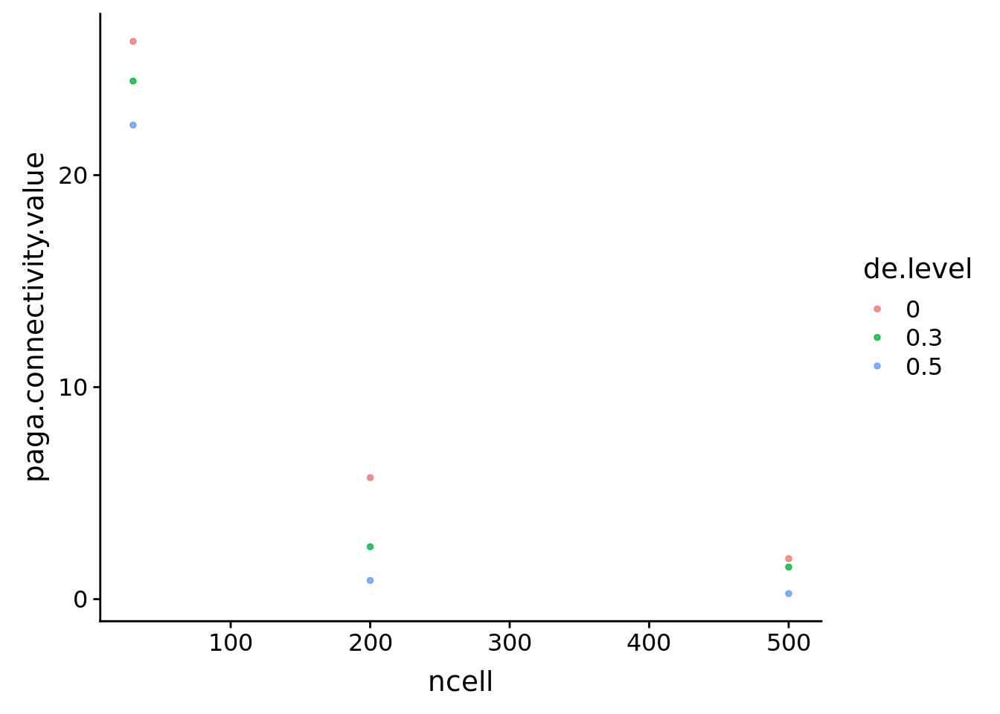
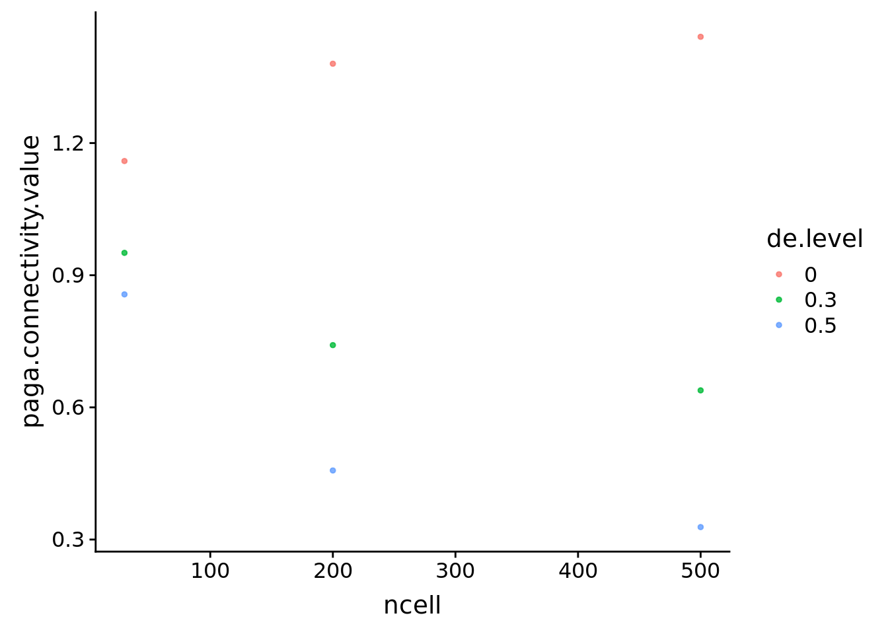

Last updated: 2019-10-04
Checks: 6 0
Knit directory: SecretUtils/
This reproducible R Markdown analysis was created with workflowr (version 1.3.0). The Checks tab describes the reproducibility checks that were applied when the results were created. The Past versions tab lists the development history.
Great! Since the R Markdown file has been committed to the Git repository, you know the exact version of the code that produced these results.
Great job! The global environment was empty. Objects defined in the global environment can affect the analysis in your R Markdown file in unknown ways. For reproduciblity it’s best to always run the code in an empty environment.
The command set.seed(20190415) was run prior to running the code in the R Markdown file. Setting a seed ensures that any results that rely on randomness, e.g. subsampling or permutations, are reproducible.
Great job! Recording the operating system, R version, and package versions is critical for reproducibility.
Nice! There were no cached chunks for this analysis, so you can be confident that you successfully produced the results during this run.
Great! You are using Git for version control. Tracking code development and connecting the code version to the results is critical for reproducibility. The version displayed above was the version of the Git repository at the time these results were generated.
Note that you need to be careful to ensure that all relevant files for the analysis have been committed to Git prior to generating the results (you can use wflow_publish or wflow_git_commit). workflowr only checks the R Markdown file, but you know if there are other scripts or data files that it depends on. Below is the status of the Git repository when the results were generated:
Ignored files:
Ignored: .Rhistory
Ignored: .Rproj.user/
Untracked files:
Untracked: .Rbuildignore
Untracked: R/asdf_bk
Untracked: R/hello.R
Untracked: analysis/eps_joint_all.bmp
Untracked: analysis/grid_of_grids.pdf
Untracked: analysis/make_scanpy_viktor.R
Untracked: analysis/morphine.Rmd
Untracked: analysis/mouse_alzheimer_annotating.Rmd
Untracked: analysis/mouse_alzheimer_preproc.Rmd
Untracked: analysis/paga.Rmd
Untracked: analysis/paga3.Rmd
Untracked: analysis/simulate_data.Rmd
Untracked: analysis/simulate_data2.Rmd
Untracked: analysis/simulate_data3.Rmd
Untracked: analysis/simulations_plots3_bk.Rmd
Untracked: analysis/simulations_plots4.Rmd
Untracked: analysis/simulations_plots5_bk.Rmd
Untracked: analysis/simulations_plots6.Rmd
Untracked: analysis/subtype_distances.Rmd
Untracked: analysis/subtype_distances2.Rmd
Untracked: analysis/subtype_distances4.Rmd
Untracked: analysis/subtype_distances_redux.Rmd
Untracked: analysis/subtype_distances_revenge.Rmd
Untracked: analysis/test_output.Rmd
Untracked: analysis/transmute_peters_code.Rmd
Untracked: docs/figure/paga.Rmd/
Untracked: man/
Unstaged changes:
Modified: analysis/correlation_stuff.Rmd
Modified: analysis/jensen_shannon_stuff.Rmd
Modified: analysis/misc_metrics.Rmd
Modified: analysis/mouse_alzheimer_analysis.Rmd
Modified: analysis/paga2.Rmd
Modified: analysis/paga_analyses.Rmd
Modified: analysis/pancreas_indrop.Rmd
Modified: analysis/sanity_check.Rmd
Modified: analysis/simulations_plots.Rmd
Modified: analysis/simulations_plots3.Rmd
Modified: analysis/simulations_plots5.Rmd
Modified: analysis/subtype_distances3.Rmd
Modified: analysis/transmute_code_eps.Rmd
Modified: analysis/transmute_code_eps_2.Rmd
Modified: analysis/visualizations.Rmd
Note that any generated files, e.g. HTML, png, CSS, etc., are not included in this status report because it is ok for generated content to have uncommitted changes.
These are the previous versions of the R Markdown and HTML files. If you’ve configured a remote Git repository (see ?wflow_git_remote), click on the hyperlinks in the table below to view them.
| File | Version | Author | Date | Message |
|---|---|---|---|---|
| Rmd | dd9b9c0 | githubz0r | 2019-10-04 | tutorial for simulated data and cleaned peter code utils example |
Load packages and soem data
library(conos)
library(tidyverse)
devtools::load_all('/home/larsc/SecretUtils')
library(cowplot)
library(splatter)
devtools::load_all('/home/viktor_petukhov/Copenhagen/NeuronalMaturation')
devtools::load_all('/home/viktor_petukhov/SmallProjects/scConditionDifference')We need to generate parameters for gamma function (initial gene means) and log normal (for library sizes). This shit takes a while so we load premade parameters, but just follow the commented lines otherwise.
#epilepsy_con <- readRDS(file.path('/home/larsc/data/10x_preproced_graphed.rds'))
#epilepsy_annot <- readRDS(file.path('/home/demharters/R/projects/UPF9_14_17_19_22_23_24_32_33/metadata_10x_final.rds'))
#epilepsy_annot$cellid <- rownames(epilepsy_annot)
#raw_cm <- RbindRaw(epilepsy_con)
#sub_matrices <- GetSubMatrices(epilepsy_annot$subtype, epilepsy_annot$cellid, epilepsy_annot$condition, raw_cm,
#colnames(raw_cm), avg=F)
#testmat <- sub_matrices$healthy$L2_Lamp5 %>% as.matrix %>% removezerocols %>% Matrix::t()
#params <- splatEstimate(testmat)
lamp5_params <- readRDS('/home/larsc/data/splatter_lamp5_params.rds')Initiate variables for the simulations. The basic principle is that we simulate a bunch of groups with different DE levels and then we use Group1 as the reference and compare the other groups to this reference. Then we do this several times with different seeds. Default values are set to 500 cells, libloc of 8 and 10000 genes (in MakeSimPerFactor). Instead of using seeds, we can also just use batches, but it should give the same result and I don’t feel like changing it. I’ve made some functions to calculate the distances in the distance list. In order to add a new distance, just make a function that compares Group1 to the other groups for a given factor and then weave it into the 10 layers of wrapper functions, it’s very simple.
de_prob <- c(0.0, 0.0, 0.3, 0.5)
ncellvec <- c(30, 200, 500)
ngenevec <- c(100, 1000, 10000)
liblocvec <- c(6.5, 7.5, 8.5)
seeds <- c(9001)
leiden_resolutions <- c(1, 2)
distances <- list('log.fold.change','jensen_shannon', 'correlation.distance', 'paga', 'CMD', 'euclidean', 'knncor.z', 'knncor.z.med', 'entropy')Now we create the actual data. We’ll just use two factors(ncell and ngenes) to speed up shit. Can add more factors by changing the functions MakeSimPerFactor and SimulateGroups.
cell_sim <- MakeSimsAllSeeds(lamp5_params, seeds, ncellvec, de_prob, 'ncell', make.p2 = T, n.cl.tsne=30, n.cl.sim=3)120 cells, 10000 genes; normalizing ... using plain model winsorizing ... log scale ... done.
calculating variance fit ... using gam 0 overdispersed genes ... 0 persisting ... done.
running PCA using 3000 OD genes ..Warning in irlba(x, nv = nPcs, nu = 0, center = cm, right_only = FALSE, :
You're computing too large a percentage of total singular values, use a
standard svd instead... done
calculating distance ... pearson ...running tSNE using 30 cores:
800 cells, 10000 genes; normalizing ... using plain model winsorizing ... log scale ... done.
calculating variance fit ... using gam 9 overdispersed genes ... 9 persisting ... done.
running PCA using 3000 OD genes .... done
calculating distance ... pearson ...running tSNE using 30 cores:
2000 cells, 10000 genes; normalizing ... using plain model winsorizing ... log scale ... done.
calculating variance fit ... using gam 26 overdispersed genes ... 26 persisting ... done.
running PCA using 3000 OD genes .... done
calculating distance ... pearson ...running tSNE using 30 cores:gene_sim <- MakeSimsAllSeeds(lamp5_params, seeds, ngenevec, de_prob, 'ngenes', make.p2 = T, n.cl.tsne=30, n.cl.sim=3)2000 cells, 100 genes; normalizing ... using plain model winsorizing ... log scale ... done.
calculating variance fit ... using gam 24 overdispersed genes ... 24 persisting ... done.
running PCA using 100 OD genes ..Warning in irlba(x, nv = nPcs, nu = 0, center = cm, right_only = FALSE, :
You're computing too large a percentage of total singular values, use a
standard svd instead.Warning in irlba(x, nv = nPcs, nu = 0, center = cm, right_only = FALSE, :
did not converge--results might be invalid!; try increasing work or maxit.. done
calculating distance ... pearson ...running tSNE using 30 cores:
2000 cells, 1000 genes; normalizing ... using plain model winsorizing ... log scale ... done.
calculating variance fit ... using gam 60 overdispersed genes ... 60 persisting ... done.
running PCA using 1000 OD genes .... done
calculating distance ... pearson ...running tSNE using 30 cores:
2000 cells, 10000 genes; normalizing ... using plain model winsorizing ... log scale ... done.
calculating variance fit ... using gam 26 overdispersed genes ... 26 persisting ... done.
running PCA using 3000 OD genes .... done
calculating distance ... pearson ...running tSNE using 30 cores:Now we create distance data frames.
dfs_per_distance <- AllDistsDfs(list(cell_sim, gene_sim), list('ncell', 'ngenes'),
distances, avg.meds=T, leiden.resolutions=leiden_resolutions)Warning in bind_rows_(x, .id): Unequal factor levels: coercing to characterWarning in bind_rows_(x, .id): binding character and factor vector,
coercing into character vector
Warning in bind_rows_(x, .id): binding character and factor vector,
coercing into character vector
Warning in bind_rows_(x, .id): binding character and factor vector,
coercing into character vectorWarning in bind_rows_(x, .id): Unequal factor levels: coercing to characterWarning in bind_rows_(x, .id): binding character and factor vector,
coercing into character vector
Warning in bind_rows_(x, .id): binding character and factor vector,
coercing into character vector
Warning in bind_rows_(x, .id): binding character and factor vector,
coercing into character vectorWarning in irlba(x, nv = nPcs, nu = 0, center = cm, right_only = FALSE, :
You're computing too large a percentage of total singular values, use a
standard svd instead.
Warning in irlba(x, nv = nPcs, nu = 0, center = cm, right_only = FALSE, :
You're computing too large a percentage of total singular values, use a
standard svd instead.
Warning in irlba(x, nv = nPcs, nu = 0, center = cm, right_only = FALSE, :
You're computing too large a percentage of total singular values, use a
standard svd instead.
Warning in irlba(x, nv = nPcs, nu = 0, center = cm, right_only = FALSE, :
You're computing too large a percentage of total singular values, use a
standard svd instead.Warning in irlba(x, nv = nPcs, nu = 0, center = cm, right_only = FALSE, :
did not converge--results might be invalid!; try increasing work or maxitWarning in irlba(x, nv = nPcs, nu = 0, center = cm, right_only = FALSE, :
You're computing too large a percentage of total singular values, use a
standard svd instead.Warning in irlba(x, nv = nPcs, nu = 0, center = cm, right_only = FALSE, :
did not converge--results might be invalid!; try increasing work or maxitWarning in irlba(x, nv = nPcs, nu = 0, center = cm, right_only = FALSE, :
You're computing too large a percentage of total singular values, use a
standard svd instead.Warning in irlba(x, nv = nPcs, nu = 0, center = cm, right_only = FALSE, :
did not converge--results might be invalid!; try increasing work or maxitCreate plots and make a grid
all_plots <- doPlotsPerFactor(dfs_per_distance, jitter=T, geom.smooth=F)
grid_all <- CreateGrid(all_plots, leiden_resolutions)
ggsave(grid_all, file='/home/larsc/plots/testshit.pdf', width=10, height=45)Bound Paga
boundcellpaga <- doBoundPaga(cell_sim$`9001`, 'ncell')2920 cells, 10000 genes; normalizing ... using plain model winsorizing ... log scale ... done.
calculating variance fit ... using gam 137 overdispersed genes ... 137 persisting ... done.
running PCA using 3000 OD genes .... done
calculating distance ... pearson ...running tSNE using 30 cores:Warning in bind_rows_(x, .id): Unequal factor levels: coercing to characterWarning in bind_rows_(x, .id): binding character and factor vector,
coercing into character vector
Warning in bind_rows_(x, .id): binding character and factor vector,
coercing into character vector
Warning in bind_rows_(x, .id): binding character and factor vector,
coercing into character vectorunboundcellpaga <- SimPagaFactor(cell_sim$`9001`, 'ncell')
boundcellpaga %>% filter(de.level!='ref') %>% ggplot(aes(x=ncell, y=paga.connectivity.value, col=de.level))+
geom_point(size=1, alpha=0.8)
unboundcellpaga %>% filter(de.level!='ref') %>% ggplot(aes(x=ncell, y=paga.connectivity.value, col=de.level))+
geom_point(size=1, alpha=0.8)
sessionInfo()R version 3.5.3 (2019-03-11)
Platform: x86_64-pc-linux-gnu (64-bit)
Running under: Ubuntu 18.04.2 LTS
Matrix products: default
BLAS: /usr/lib/x86_64-linux-gnu/atlas/libblas.so.3.10.3
LAPACK: /usr/lib/x86_64-linux-gnu/atlas/liblapack.so.3.10.3
locale:
[1] LC_CTYPE=en_US.UTF-8 LC_NUMERIC=C
[3] LC_TIME=en_US.UTF-8 LC_COLLATE=en_US.UTF-8
[5] LC_MONETARY=en_US.UTF-8 LC_MESSAGES=en_US.UTF-8
[7] LC_PAPER=en_US.UTF-8 LC_NAME=C
[9] LC_ADDRESS=C LC_TELEPHONE=C
[11] LC_MEASUREMENT=en_US.UTF-8 LC_IDENTIFICATION=C
attached base packages:
[1] parallel stats4 stats graphics grDevices utils datasets
[8] methods base
other attached packages:
[1] scConditionDifference_0.1.0 NeuronalMaturation_0.1.0
[3] splatter_1.6.1 SingleCellExperiment_1.4.1
[5] SummarizedExperiment_1.12.0 DelayedArray_0.8.0
[7] BiocParallel_1.16.6 matrixStats_0.54.0
[9] Biobase_2.42.0 GenomicRanges_1.34.0
[11] GenomeInfoDb_1.18.2 IRanges_2.16.0
[13] S4Vectors_0.20.1 BiocGenerics_0.28.0
[15] cowplot_0.9.4 SecretUtils_0.1.0
[17] reshape2_1.4.3 magrittr_1.5
[19] forcats_0.4.0 stringr_1.4.0
[21] dplyr_0.8.3 purrr_0.3.2
[23] readr_1.3.1 tidyr_0.8.3
[25] tibble_2.1.3 ggplot2_3.2.0
[27] tidyverse_1.2.1 conos_1.0.0
[29] igraph_1.2.4.1 Matrix_1.2-17
loaded via a namespace (and not attached):
[1] Rtsne_0.15 colorspace_1.4-1 rjson_0.2.20
[4] rprojroot_1.3-2 XVector_0.22.0 base64enc_0.1-3
[7] fs_1.3.1 rstudioapi_0.10 ggpubr_0.2
[10] urltools_1.7.3 remotes_2.0.4 lubridate_1.7.4
[13] xml2_1.2.0 splines_3.5.3 knitr_1.22
[16] pkgload_1.0.2 jsonlite_1.6 workflowr_1.3.0
[19] broom_0.5.2 shiny_1.3.2 compiler_3.5.3
[22] httr_1.4.0 backports_1.1.4 assertthat_0.2.1
[25] lazyeval_0.2.2 cli_1.1.0 later_0.8.0
[28] htmltools_0.3.6 prettyunits_1.0.2 tools_3.5.3
[31] gtable_0.3.0 glue_1.3.1 GenomeInfoDbData_1.2.0
[34] Rcpp_1.0.1 cellranger_1.1.0 nlme_3.1-139
[37] xfun_0.6 ps_1.3.0 testthat_2.1.1
[40] rvest_0.3.4 irlba_2.3.3 mime_0.6
[43] devtools_2.0.2 dendextend_1.12.0 MASS_7.3-51.3
[46] zlibbioc_1.28.0 scales_1.0.0 hms_0.4.2
[49] promises_1.0.1 yaml_2.2.0 memoise_1.1.0
[52] pbapply_1.4-0 gridExtra_2.3 triebeard_0.3.0
[55] stringi_1.4.3 Rook_1.1-1 desc_1.2.0
[58] checkmate_1.9.1 pkgbuild_1.0.3 rlang_0.4.0
[61] pkgconfig_2.0.2 bitops_1.0-6 evaluate_0.13
[64] lattice_0.20-38 pagoda2_0.1.0 labeling_0.3
[67] processx_3.3.1 tidyselect_0.2.5 plyr_1.8.4
[70] R6_2.4.0 generics_0.0.2 mgcv_1.8-28
[73] pillar_1.4.2 haven_2.1.0 whisker_0.3-2
[76] withr_2.1.2 abind_1.4-5 RCurl_1.95-4.12
[79] modelr_0.1.4 crayon_1.3.4 rmarkdown_1.12
[82] viridis_0.5.1 usethis_1.5.0 locfit_1.5-9.1
[85] grid_3.5.3 readxl_1.3.1 data.table_1.12.2
[88] callr_3.2.0 git2r_0.25.2 digest_0.6.20
[91] xtable_1.8-4 httpuv_1.5.1 brew_1.0-6
[94] munsell_0.5.0 viridisLite_0.3.0 sessioninfo_1.1.1